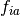
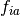
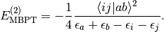
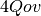
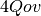

Density-Fitted Second-Order Møller-Plesset Perturbation Theory¶
Code author: Robert M. Parrish
Section author: Robert M. Parrish
Module: Keywords, PSI Variables, DFMP2
Introduction¶
Second-order Møller-Plesset Perturbation Theory (MP2) occupies a unique role
in quantum chemistry due to its small-prefactor  treatment of
dynamic electron correlation. This unusually cheap
ab initio treatment of electron correlation may be made even more
efficient by means of the Density-Fitting (DF) approximation (also known as
Resolution-of-the-Identity or RI), wherein the quadratic
treatment of
dynamic electron correlation. This unusually cheap
ab initio treatment of electron correlation may be made even more
efficient by means of the Density-Fitting (DF) approximation (also known as
Resolution-of-the-Identity or RI), wherein the quadratic  products in the
bra- and ket- of the
products in the
bra- and ket- of the  -type Electron Repulsion Integrals (ERIs)
appearing in MP2 are cast onto a linear-scaling auxiliary basis by least-squares
fitting. Substitution of the DF factorization into the MP2 equations results in
a formal scaling and prefactor reduction of MP2, and further speed gains are
possible due to heavy utilization of matrix-multiplication kernels and minimal
storage requirements in a DF approach. The method has been found to be quite
robust and accurate, and it should be preferred unless extreme accuracy is required
or a fitting basis is not defined for the primary basis and atom type
encountered. In particular, we have found excellent efficiency and tractability
gains when using DF-MP2 in concert with a DF-SCF reference. An efficient,
threaded, disk-based DF-MP2 code is available in PSI4 for all single
reference types available in the SCF module.
-type Electron Repulsion Integrals (ERIs)
appearing in MP2 are cast onto a linear-scaling auxiliary basis by least-squares
fitting. Substitution of the DF factorization into the MP2 equations results in
a formal scaling and prefactor reduction of MP2, and further speed gains are
possible due to heavy utilization of matrix-multiplication kernels and minimal
storage requirements in a DF approach. The method has been found to be quite
robust and accurate, and it should be preferred unless extreme accuracy is required
or a fitting basis is not defined for the primary basis and atom type
encountered. In particular, we have found excellent efficiency and tractability
gains when using DF-MP2 in concert with a DF-SCF reference. An efficient,
threaded, disk-based DF-MP2 code is available in PSI4 for all single
reference types available in the SCF module.
An example utilization of the code is:
molecule h2o {
0 1
O
H 1 1.0
H 1 1.0 2 104.5
}
set basis cc-pvdz
set scf_type df
set freeze_core True
energy('df-mp2')
The energy('df-mp2') call to energy() executes
the predefined DF-MP2 procedure, first calling
the SCF module with a default RHF reference and DF algorithm for the
two-electron integrals. When the orbitals are converged, the DF-MP2 module is
launched, which forms the density-fitted  integrals and then builds the
full tensor in blocks, evaluating the contributions to the MP2 energy
as it goes. A RHF-MP2 wavefunction is selected automatically due to the RHF
reference. In this example, we freeze the core, both for efficiency and
because split-valence bases like cc-pVDZ do not contain core correlation
functions. The result looks something like:
integrals and then builds the
full tensor in blocks, evaluating the contributions to the MP2 energy
as it goes. A RHF-MP2 wavefunction is selected automatically due to the RHF
reference. In this example, we freeze the core, both for efficiency and
because split-valence bases like cc-pVDZ do not contain core correlation
functions. The result looks something like:
----------------------------------------------------------
====================> MP2 Energies <====================
----------------------------------------------------------
Reference Energy = -76.0213974789664633 [H]
Singles Energy = -0.0000000000000001 [H]
Same-Spin Energy = -0.0512503261762665 [H]
Opposite-Spin Energy = -0.1534098129352447 [H]
Correlation Energy = -0.2046601391115113 [H]
Total Energy = -76.2260576180779736 [H]
----------------------------------------------------------
==================> SCS-MP2 Energies <==================
----------------------------------------------------------
SCS Same-Spin Scale = 0.3333333333333333 [-]
SCS Opposite-Spin Scale = 1.2000000000000000 [-]
SCS Same-Spin Energy = -0.0170834420587555 [H]
SCS Opposite-Spin Energy = -0.1840917755222936 [H]
SCS Correlation Energy = -0.2011752175810492 [H]
SCS Total Energy = -76.2225726965475161 [H]
----------------------------------------------------------
The theory, breakdown of results, and common keywords used in DF-MP2 are presented below.
Theory¶
Møller-Plesset Theory (MPn) or Many-Body Perturbation Theory (MBPT) through second order has the spin-orbital formula:
(1)
Here  and
and  are occupied spin orbitals,
are occupied spin orbitals,  and
and
 are virtual spin orbitals,  are the
Fock Matrix elements,
are virtual spin orbitals,  are the
Fock Matrix elements,  are the orbital eigenvalues, and
are the orbital eigenvalues, and
 are the antisymmetrized physicist’s ERIs.
For converged RHF and UHF references, the singles correction,
are the antisymmetrized physicist’s ERIs.
For converged RHF and UHF references, the singles correction,

is zero due to the Brillioun Condition, and the first contribution to the perturbation series is at the second order:

In the DFMP2 module, the first-order contribution, or “singles energy” is always evaluated. This term is a significant contributor to the total second-order energy if a ROHF reference is used. In this case, we have chosen to use the ROHF-MBPT(2) ansatz, in which the ROHF orbitals are semicanonicalized, the resultant nonzero Fock matrix elements are used to form the singles amplitudes, and then the second-order amplitudes are formed with the semicanonical spin orbitals via the same machinery as a UHF-MP2. Note that the singles energy should be very close to zero for RHF and UHF references; if it is not, there is a good chance your orbitals are not well converged. Tighten the SCF E_CONVERGENCE and/or D_CONVERGENCE keywords and try again.
To increase the efficiency of MP2 energy evaluation, spin integration and simplification is carried out. This also allows for the identification of Same-Spin (SS) and Opposite-Spin (OS) terms for use in Grimme’s Spin-Component Scaled (SCS) MP2. For RHF-MP2 (also labeled as RMP2), the spin-free equations are (note that the integrals are now chemist’s integrals over spatial orbitals)

and
}{\epsilon_a + \epsilon_b - \epsilon_i - \epsilon_j}.](_images/math/c5413a8dc763a228a1e510148cb445cc716d3b95.png)
For UHF-MP2 (also labeled as UMP2) and the second-order contribution to ROHF-MBPT(2) using semicanonical orbitals, the spin-free equations are

and
}
{\epsilon_a + \epsilon_b - \epsilon_i - \epsilon_j}
- \frac{1}{2}\frac{[(ia^\beta|jb^\beta)-(ib^\beta|ja^\beta)](ia^\beta|jb^\beta)}
{\epsilon_a + \epsilon_b - \epsilon_i - \epsilon_j}.](_images/math/1ed1f35c5937d5df13bd0c8d1c14c79ed8e4fb00.png)
Note that the UHF-MP2 equations use three classes of integrals, while the RHF-MP2 equations use only one class. Because of this, a UHF-MP2 or ROHF-MBPT(2) energy should take roughly three times as long as an RHF-MP2 energy.
Recommendations¶
All-in-all, DFMP2 should be a simple module to use, with few keywords (fully documented in the Appendix DFMP2). Some basic recommendations are included below:
- DFMP2 should be run with the -type RI or MP2FIT auxiliary
basis sets, not the -JKFIT basis sets. The automatic basis selector
should work fine for all of the Dunning bases (provided the auxiliary
basis exists for the atom in question). If it does not, use the
DF_BASIS_MP2 keyword to manually specify the basis.
- DFMP2 likes memory. At a minimum,
 doubles are required,
where
doubles are required,
where  is the size of the auxiliary basis set. However, there is
one disk transpose of the tensor in the RHF-MP2 algorithm
[two for UHF-MP2 and ROHF-MBPT(2)], so more memory will reduce seek times.
If you notice DFMP2 using more memory than allowed, it is possible that
the threaded three-index ERI computers are using too much overhead memory.
Set the DF_INTS_NUM_THREADS to a smaller number to prevent this
in this section (does not affect threaded efficiency in the rest of the
code).
is the size of the auxiliary basis set. However, there is
one disk transpose of the tensor in the RHF-MP2 algorithm
[two for UHF-MP2 and ROHF-MBPT(2)], so more memory will reduce seek times.
If you notice DFMP2 using more memory than allowed, it is possible that
the threaded three-index ERI computers are using too much overhead memory.
Set the DF_INTS_NUM_THREADS to a smaller number to prevent this
in this section (does not affect threaded efficiency in the rest of the
code). - DFMP2 likes disk. At a minimum,
 doubles are required for
RHF-MP2, and  doubles are required for UHF-MP2.
doubles are required for
RHF-MP2, and  doubles are required for UHF-MP2. - DFMP2 likes threads. Some of the formation of the tensor
relies on threaded BLAS (such as MKL) for efficiency. The main
step is done via small/medium-sized DGEMMs inside of
OpenMP, so make sure to set the OMP_NESTED environment variable
to FALSE to prevent thread thrash (or just as well, do not define
OMP_NESTED at all).
- Freezing core is good for both efficiency and correctness purposes. Freezing virtuals is not recommended. The DFMP2 module will remind you how many frozen/active orbitals it is using in a section just below the title.
- ROHF-MBPT(2) may be preferred to UHF-MP2, as the latter can suffer from severe spin contamination in some cases.
- MP2 is not suitable for systems with multireference character. The orbital energies will come together and an explosion will occur.